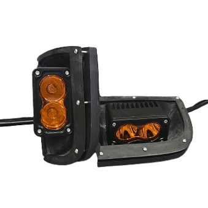
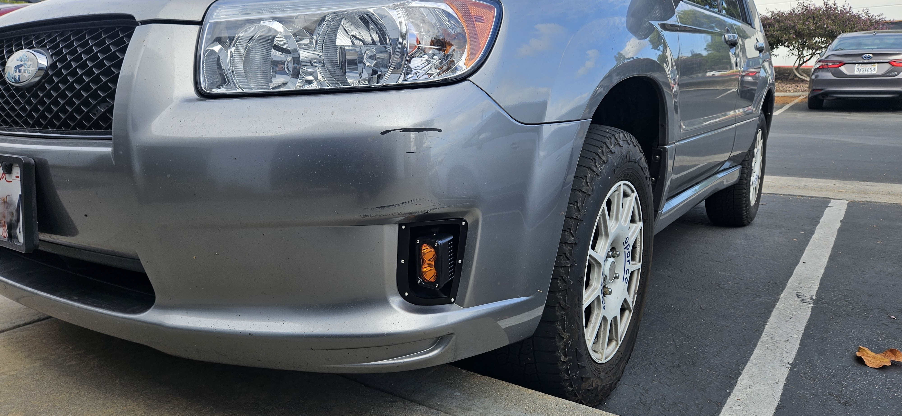
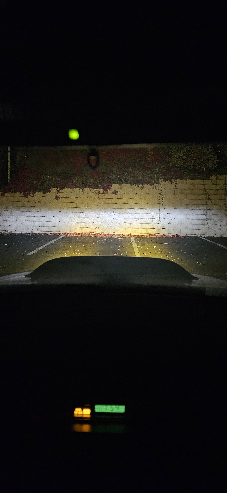
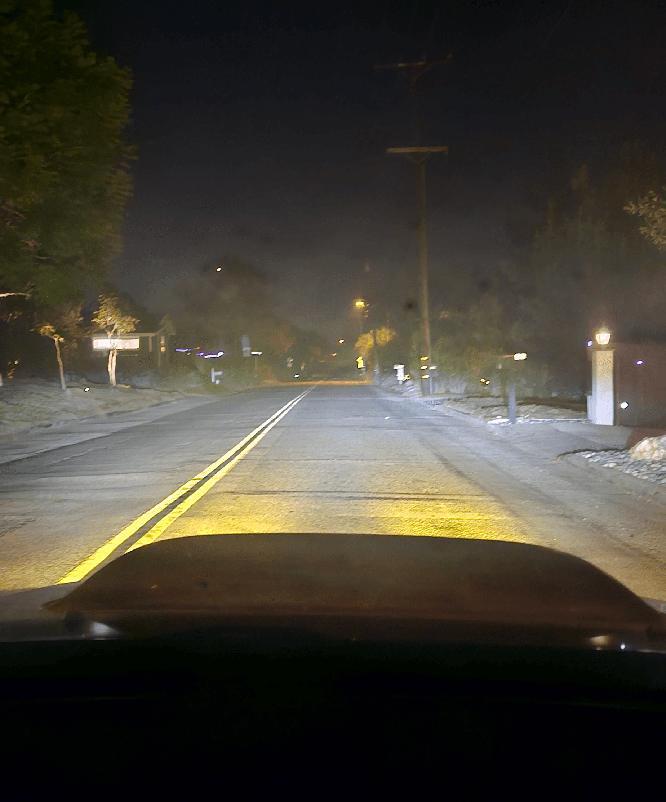

Subaru Forester Sports Pre-Assembled Amber Auxiliary Light Kit
Plug-and-play upgrade for a seamless factory-like fit.

Product Description:
A custom-designed amber light kit that flush-mounts perfectly into the 2006-2008 Subaru Forester Sports bumper. The only light housing on the market designed specifically for the Forester SG Sports model, offering a clean and factory-like installation.
Vehicle Fitment:
2006 - 2008 Subaru Forester Sports (SG w/ Facelift)
$250
By purchasing, you agree to the SMITHtRONiC Terms of Service.
Key Features:
Perfect Fit
Seamlessly integrates into the Sports bumper fog light holes.
Plug-and-Play
Pre-wired for easy connection to the existing harness.
Adjustable Beam
Vertical and horizontal articulation to fine-tune your light's aim.
High-Quality Materials
ASA Plastic and Stainless Steel for durability and UV resistance.
What's Included:
- 2 ASA-Printed Housings
- 2 ASA-Printed Retainers with Brass Heat Inserts
- 2 Pre-wired Amber LED Lights with Harness Connectors
- All Necessary Stainless Steel Hardware
Buyer Needs to Acquire:
- In an effort to keep the cost down, these parts are not included in the kit but are easily acquired through Subaru or other retailers.
- Fog Light Relay
- Part Number: 82501AE03A
- Fog Light Switch
- Part Number: 83001SA000
Price and Purchase:
- Price: $250
- Lead Time: 2-3 weeks (subject to change as stock builds)
- Limited Availability: These light kits are exclusively produced by me. To maintain quality and precision, I limit each batch to 5 orders. Once sold out, the buy link will temporarily close until I restock. Please check back soon if it's currently unavailable.





FAQs:
How long until I receive my set?
Currently, these kits are made to order, so you can expect shipment confirmation within 2-3 weeks, hopefully sooner. The production timeline may improve as I scale up, but for now, the printing process alone takes about three days per set. I appreciate your patience and dedication to quality craftsmanship!
Are these lights SAE approved?
The lights included in this set do not specifically state whether they are SAE approved. As such, I cannot confirm their compliance and assume no responsibility for how you choose to use them. Please ensure your application complies with local regulations.
Why did you use these spot style LEDs instead of a flood style?
The size and shape of the hole first directed me to a 3x1.5-inch light, as it fills out the space well and, in my opinion, flows with the lines of the vehicle.
I initially found these lights in a flood style, but the flood pattern would only work if the lights were mounted horizontally. To keep them mounted vertically and close to the body of the vehicle, while minimally protruding out from the bumper, I chose the spot style instead.
The articulation in the design allows the spot beam to be pointed where the flood pattern would send light—just below the headlight beam, although it may not be as wide of a spread.
Can I use a different light?
Yes, you can! If you prefer to use a different light, I recommend choosing the DIY Kit, which is designed for compatibility with a variety of lights mounted using a single bolt through the bracket and housing.
If you have a specific light in mind and want to ensure a perfect fit, I offer a custom design service. You can send me your light and, for an additional charge (based on design time), I can create a housing tailored to your light's specifications. Contact me for more details or to discuss your custom project!